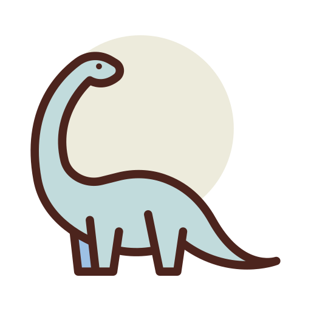

Welcome to Genomicus’s documentation!
{kind=link}
Bienvenue à Genomicus !
Ce site web vous permet d’explorer les génomes de différentes espèces grâce à notre outil de visualisation. Vous pouvez aussi explorer les différents génomes de notre base de données (ou de celle du NCBI) en parcourant les informations relatives aux protéines et CDS.
Genomicus est surtout une communauté scientifique ! En effet, en fonction de votre implication ou de vos connaissances biologiques différents rôles peuvent vous être attribués. Rejoignez-nous !
Plan du site:
Récapitulatif des modules
- genomicus
- genomApp package
- Subpackages
- Submodules
- genomApp.admin module
- genomApp.apps module
- genomApp.forms module
- genomApp.functionsVisualisationGenome module
- genomApp.models module
AnnotationCodantInfoCodantInfo.DoesNotExistCodantInfo.MultipleObjectsReturnedCodantInfo.TYPE_CHOICESCodantInfo.annotation_setCodantInfo.chromosomeCodantInfo.chromosome_idCodantInfo.codant_typeCodantInfo.descriptionCodantInfo.especeCodantInfo.forum_setCodantInfo.gc_rateCodantInfo.geneCodantInfo.gene_biotypeCodantInfo.gene_symbolCodantInfo.get_codant_type_display()CodantInfo.idCodantInfo.is_plasmidCodantInfo.objectsCodantInfo.phaseLectureCodantInfo.sequencecodant_setCodantInfo.startCodantInfo.stopCodantInfo.tailleCodantInfo.transcriptCodantInfo.transcript_biotype
CommentaireCommentaire.DoesNotExistCommentaire.MultipleObjectsReturnedCommentaire.auteurCommentaire.auteur_idCommentaire.dateCommentaire.date_updateCommentaire.get_next_by_date()Commentaire.get_previous_by_date()Commentaire.idCommentaire.id_forumCommentaire.id_forum_idCommentaire.objectsCommentaire.text
ForumGenomeSeqInfoSequenceBaseSequenceCodantSequenceGenome
- genomApp.tests module
- genomApp.urls module
- genomApp.views module
accueil()accueil_annotateur()accueil_forum()accueil_validateur()affectation_annotation()allowed_to_annotate()annotateurs_from_validateur()blastRedirection()contact()deleteComment()displayComment()email_envoi()erreur()forum()geneProteineAutocomplete()get_annotateurs()get_annotations()get_annotations_validateur()get_current_annotateur()get_dico_annotateurs()get_espece()get_names()get_names_from_email()get_users()idGenomeAutocomplete()idProteineAutocomplete()informationsRelativesProteineGene()protein_annotation()protein_not_being_annotated()qui_sommes_nous()recherche_affectation_annotation()remove_header()resultatsFormulaireGenome()resultatsFormulaireProteineGene()seq_deja_affectees()seq_type()speciesGenomeAutocomplete()speciesProteineAutocomplete()updateComment()validate_annotations()valider()view_annotation()visualisationGenome()
- Module contents
- genomicus package
- manage module
- member package
- Subpackages
- Submodules
- member.admin module
- member.apps module
- member.backends module
- member.forms module
- member.models module
MemberMember.DoesNotExistMember.MultipleObjectsReturnedMember.REQUIRED_FIELDSMember.USERNAME_FIELDMember.USER_TYPE_CHOICESMember.annotateurMember.auteur_commentaireMember.auteur_forumMember.connecteMember.emailMember.firstNameMember.get_user_type_display()Member.idMember.lastNameMember.last_loginMember.objectsMember.passwordMember.phoneMember.user_typeMember.validateur
MemberManager
- member.tests module
- member.urls module
- member.views module
- Module contents
- genomApp package